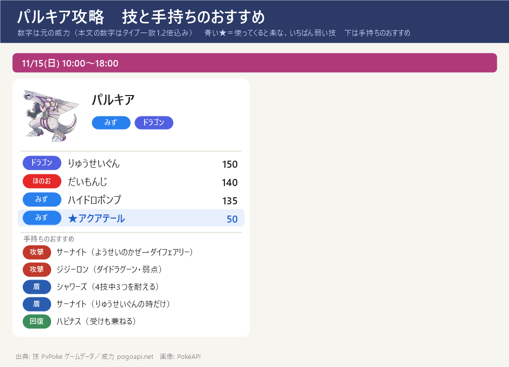
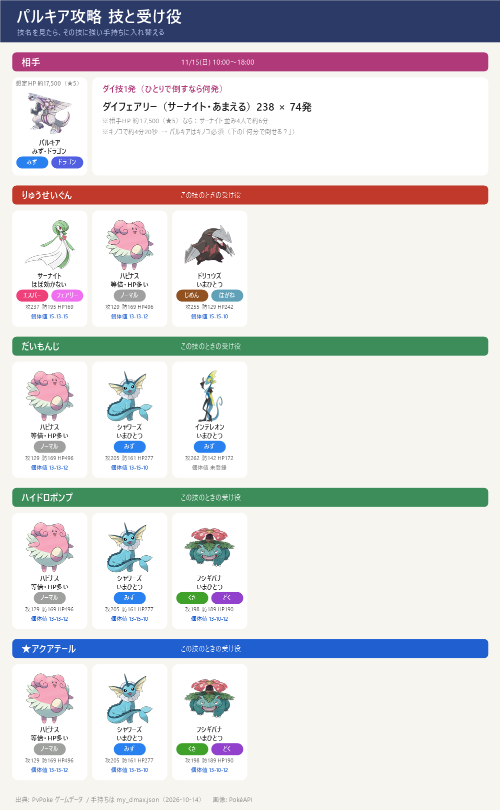

ダイマックス パルキア 攻略（11/15 日）
ダイマックス パルキア 攻略（11/15 日）- GOワイルドエリア：グローバル 11/15(日) 10:00～18:00。ダイマックス パルキア（みず・ドラゴン）
- 弱点：ドラゴン・フェアリー（2倍）。攻撃役はサーナイト（あまえる）・ニンフィア（入手できたら）。ほかは等倍なのでゲンガー
- ねらい目の技：アクアテール（威力60）。いちばん危ないのは りゅうせいぐん（180）、次がハイドロポンプ（162）
- 11/9〜 王の姿ザマゼンタ（たてのおう・かくとう/はがね）が入る場合：いちばん危ないりゅうせいぐん（180→112）をいまひとつで受けられ、手持ちで最も軽い＋開始時に盾1枚 → りゅうせいぐんが全体攻撃のときの受け役に最適。みず技（ハイドロポンプ・アクアテール）は等倍。ただし だいもんじ（ほのお）が弱点（224）なので、だいもんじが全体攻撃のときは前に出さず・交代する。いない場合（またはだいもんじのとき）はシャワーズ＋ハピナスで受ける。ザマゼンタは受け役なので必要な人数の目安（キノコ併用で4人）は変わらないが、りゅうせいぐんのときの受けが安定する
技カード

スペシャルアタック候補とねらい目

- りゅうせいぐん（ドラゴン）威力 180 ← いちばん危ない
- だいもんじ（ほのお）威力 140
- ハイドロポンプ（みず）威力 162
- ★ アクアテール（みず）威力 60 ← ねらい目（いちばん弱い）
- 「あくうせつだん」はオリジンフォルムだけの技なので、ダイマックス版は使わない見込み。通常技はドラゴンブレス／ドラゴンテール
- 技は選べない。最初の大技の名前を見て、受け役を合わせる
ボスの攻撃のルール
- 1回のバトルで使う技は2つだけ：このボスのゲージ技（りゅうせいぐん・だいもんじ・ハイドロポンプ・アクアテール）から2つが抽選され、片方が『単体攻撃（スペシャル技）』・もう片方が『全体攻撃』に決まる。バトルの間はこの割り当てのまま変わらない
- 単体攻撃（スペシャル技）：ねらわれた1体の頭の上に3本線（黄色い光）が出て約1秒後に当たる。左右にスワイプで避けられる（ギリギリで避けるほど軽い：すぐ約5割減・点滅直前で約7割減）
- 全体攻撃：「○○の全体攻撃！」の予告の帯が出て場の全員に当たる。避けられない → ダイウォールを張るか、その技に強い受け役に交代する
- 見分け方：出た技が『頭上の3本線』なら単体、『○○の全体攻撃！』の帯なら全体。最初の1〜2回でどの技がどちらかが分かる。来た技名に合わせて受け役を置く → 下の『パターンの早見表』『パターン別の作戦』を見る
- 負けてもマックス粒子（MP）は減らない → 組み合わせが悪ければ気にせず入り直してよい（入り直すと組み合わせは変わることがある）
- ルールの出典：ポケモンWiki「マックスバトル」＋みんポケ「回避のしかた」で一致（実際に戦った感覚とも一致）
交代受けのコツ
- ボスの技は単体攻撃（スペシャル技）と全体攻撃の2種類で、守り方がちがう。単体は交代で受けず回避・全体だけ予告を見て交代で受ける
- 単体攻撃（スペシャル技）＝交代せずスワイプで回避：ねらわれた1体の頭の上に3本線（黄色い光）が出て約1秒後に当たる → すぐ横にスワイプして避ける。交代は間に合わないので、単体攻撃を交代で受け役に回すことはしない（先頭はそのまま避ける）
- 全体攻撃＝予告を見てから受け役に交代：バトル開始時・ボスの技の直後・ダイマックス解除時に「○○の全体攻撃！」の予告の帯が出る → 予告を見てから、その技に強い受け役に交代して受け、受けたら先頭に戻す（避けられないのでダイウォールを張ってもよい）
出陣する3体
出陣する3体：サーナイト（攻撃）・シャワーズ（受け）・ハピナス（受け）。連れて行けるのは1人3体まで。下の『パターン別の作戦』の受け1・受け2・攻撃はこの3体の中で選ぶ
パルキアで弱点（ドラゴン・フェアリー）を突けるのは手持ちではサーナイトだけ → 攻撃はサーナイト。サーナイトは同時に、いちばん危ないりゅうせいぐんをほぼ無効（フェアリー）で受けられる
全体攻撃のだいもんじ・ハイドロポンプ・アクアテールはシャワーズがまとめていまひとつで受けられ、ハピナスはどの技も等倍だがHPが多く回復（ダイリカバリー）役 → りゅうせいぐんはサーナイト、みず・ほのおはシャワーズ、と全12パターンの受けがこの3体でそろう
シャワーズ（CP1704・確認済み）が倒れたときは、みず技をいまひとつで受けられるインテレオンでも代用できる
11/9以降の3体（王の姿ザマゼンタ加入後）：サーナイト（攻撃）・シャワーズ（受け）・ザマゼンタ(王)（受け）。連れて行けるのは1人3体まで。下の『パターン別の作戦』の受け1・受け2・攻撃はこの3体の中で選ぶ
王の姿ザマゼンタが入ったらハピナスの代わりに。りゅうせいぐんをいまひとつで受けられて開始時に盾1枚 → サーナイトを攻撃に専念させられる。ただし だいもんじが弱点なので、だいもんじが全体のときはシャワーズに任せる
パターンの早見表
どのパターンでも、まず弱点のない受け役で受けて技を確認 → 下のとおり入れ替える。評価は避けられない『全体攻撃』で決める：技の威力そのものが高い（150以上）か、相性の良い受け役でも大きく削られる（目安70以上）と『はずれ』、威力が低め（100以下）で相性の良い受け役なら軽い（目安50以下）と『当たり』、その間が『ふつう』。全技が高威力のボスでは『当たり』は出ない（単体攻撃はスワイプで避けられるので評価に入れない）
| # | 単体 3本線・避ける | 全体 予告・避けられない | 全体の 威力 | 評価 | 全体の受け役 |
|---|---|---|---|---|---|
| 1 | りゅうせいぐん | アクアテール | 60 | 当たり | インテレオン |
| 2 | だいもんじ | アクアテール | 60 | 当たり | インテレオン |
| 3 | ハイドロポンプ | アクアテール | 60 | 当たり | インテレオン |
| 4 | アクアテール | りゅうせいぐん | 180 | はずれ | サーナイト |
| 5 | だいもんじ | りゅうせいぐん | 180 | はずれ | サーナイト |
| 6 | アクアテール | だいもんじ | 140 | はずれ | インテレオン |
| 7 | ハイドロポンプ | りゅうせいぐん | 180 | はずれ | サーナイト |
| 8 | りゅうせいぐん | だいもんじ | 140 | はずれ | インテレオン |
| 9 | アクアテール | ハイドロポンプ | 162 | はずれ | インテレオン |
| 10 | ハイドロポンプ | だいもんじ | 140 | はずれ | インテレオン |
| 11 | りゅうせいぐん | ハイドロポンプ | 162 | はずれ | インテレオン |
| 12 | だいもんじ | ハイドロポンプ | 162 | はずれ | インテレオン |
数字＝全体攻撃1発の目安（威力×相性・タイプ一致1.2倍込み）。『全体の威力』は技そのものの威力。評価＝威力150以上か目安70以上→はずれ／威力100以下かつ目安50以下→当たり／その間→ふつう。手持ち・個体値・技レベルは my_dmax.json より
パターン別の作戦
受け2体＋攻撃1体が基本。各パターンで上の『出陣する3体』の中から 受け1（基本の先頭・スペシャル技をスワイプで回避しつつ受ける）／受け2（全体攻撃の予告で交代。攻撃役が全体を半減以下で受けられるなら攻撃役に交代／受け1のままでよいなら交代不要）／攻撃（ダイマックスのとき交代）を選ぶ。スペシャル技は交代で受けず回避し、全体攻撃だけ交代で受ける（当たり→ふつう→はずれ の順）
パターン1 単体=りゅうせいぐん／全体=アクアテール ［当たり］
評価：当たり — 避けられない全体攻撃が威力低めで、相性の良い受け役なら軽い組み合わせ。少人数ならこれになるまで入り直すのが定番
この組み合わせは 単体＝りゅうせいぐん（頭上に3本線・スワイプで回避）と 全体＝アクアテール（「アクアテールの全体攻撃！」の予告・避けられない）。受け2体＋攻撃1体でこう動く：
受け1（基本の先頭）＝サーナイト：スペシャル技〔りゅうせいぐん〕をほぼ効かない（1発70）で受けられる。スペシャル技は交代で受けられないので先頭に置き、3本線が出たらスワイプで回避しつつ通常技でゲージをためる
受け2（全体攻撃の予告で交代）＝シャワーズ：全体攻撃〔アクアテール〕を3体でいちばん軽いいまひとつ（1発38）で受けられる → 予告が出たら交代して受け、受けたら受け1に戻す。この受け役はダイウォールを持たないので、盾を張るなら ハピナス（ダイウォール Lv1）
攻撃（ダイマックスのとき交代）＝サーナイト（受け1と兼任）：フェアリー技でボスの弱点を突ける（1発238）。ダイマックスがたまったら交代して弱点を突く
見分け方：最初に頭上の3本線でりゅうせいぐん、予告の帯でアクアテールが来たらこのパターン
パターン2 単体=だいもんじ／全体=アクアテール ［当たり］
評価：当たり — 避けられない全体攻撃が威力低めで、相性の良い受け役なら軽い組み合わせ。少人数ならこれになるまで入り直すのが定番
この組み合わせは 単体＝だいもんじ（頭上に3本線・スワイプで回避）と 全体＝アクアテール（「アクアテールの全体攻撃！」の予告・避けられない）。受け2体＋攻撃1体でこう動く：
受け1（基本の先頭）＝シャワーズ：スペシャル技〔だいもんじ〕をいまひとつ（1発88）で受けられる。スペシャル技は交代で受けられないので先頭に置き、3本線が出たらスワイプで回避しつつ通常技でゲージをためる
受け2（全体攻撃の予告で交代）＝交代不要（受け1のままでよい）：受け1が全体攻撃〔アクアテール〕もいまひとつで受けられるので、交代せずそのまま受けてよい（不安ならダイウォールで固める）
攻撃（ダイマックスのとき交代）＝サーナイト：フェアリー技でボスの弱点を突ける（1発238）。ダイマックスがたまったら交代して弱点を突く
見分け方：最初に頭上の3本線でだいもんじ、予告の帯でアクアテールが来たらこのパターン
パターン3 単体=ハイドロポンプ／全体=アクアテール ［当たり］
評価：当たり — 避けられない全体攻撃が威力低めで、相性の良い受け役なら軽い組み合わせ。少人数ならこれになるまで入り直すのが定番
この組み合わせは 単体＝ハイドロポンプ（頭上に3本線・スワイプで回避）と 全体＝アクアテール（「アクアテールの全体攻撃！」の予告・避けられない）。受け2体＋攻撃1体でこう動く：
受け1（基本の先頭）＝シャワーズ：スペシャル技〔ハイドロポンプ〕をいまひとつ（1発101）で受けられる。スペシャル技は交代で受けられないので先頭に置き、3本線が出たらスワイプで回避しつつ通常技でゲージをためる
受け2（全体攻撃の予告で交代）＝交代不要（受け1のままでよい）：受け1が全体攻撃〔アクアテール〕もいまひとつで受けられるので、交代せずそのまま受けてよい（不安ならダイウォールで固める）
攻撃（ダイマックスのとき交代）＝サーナイト：フェアリー技でボスの弱点を突ける（1発238）。ダイマックスがたまったら交代して弱点を突く
見分け方：最初に頭上の3本線でハイドロポンプ、予告の帯でアクアテールが来たらこのパターン
パターン4 単体=アクアテール／全体=りゅうせいぐん ［はずれ］
評価：はずれ — 避けられない全体攻撃の威力が高い組み合わせ。入り直して別の組み合わせを狙うのがおすすめ
この組み合わせは 単体＝アクアテール（頭上に3本線・スワイプで回避）と 全体＝りゅうせいぐん（「りゅうせいぐんの全体攻撃！」の予告・避けられない）。受け2体＋攻撃1体でこう動く：
受け1（基本の先頭）＝シャワーズ：スペシャル技〔アクアテール〕をいまひとつ（1発38）で受けられる。スペシャル技は交代で受けられないので先頭に置き、3本線が出たらスワイプで回避しつつ通常技でゲージをためる
受け2（全体攻撃の予告で交代）＝攻撃役〔サーナイト〕に交代：攻撃役が全体攻撃〔りゅうせいぐん〕をほぼ効かない（1発70）で受けられる → 全体攻撃の予告が出たら攻撃役に交代して受け、受けたら受け1に戻す
攻撃（ダイマックスのとき交代）＝サーナイト：フェアリー技でボスの弱点を突ける（1発238）。ダイマックスがたまったら交代して弱点を突く
見分け方：最初に頭上の3本線でアクアテール、予告の帯でりゅうせいぐんが来たらこのパターン。全体攻撃の威力が高いので、入り直して別の組み合わせを狙うのも手
パターン5 単体=だいもんじ／全体=りゅうせいぐん ［はずれ］
評価：はずれ — 避けられない全体攻撃の威力が高い組み合わせ。入り直して別の組み合わせを狙うのがおすすめ
この組み合わせは 単体＝だいもんじ（頭上に3本線・スワイプで回避）と 全体＝りゅうせいぐん（「りゅうせいぐんの全体攻撃！」の予告・避けられない）。受け2体＋攻撃1体でこう動く：
受け1（基本の先頭）＝シャワーズ：スペシャル技〔だいもんじ〕をいまひとつ（1発88）で受けられる。スペシャル技は交代で受けられないので先頭に置き、3本線が出たらスワイプで回避しつつ通常技でゲージをためる
受け2（全体攻撃の予告で交代）＝攻撃役〔サーナイト〕に交代：攻撃役が全体攻撃〔りゅうせいぐん〕をほぼ効かない（1発70）で受けられる → 全体攻撃の予告が出たら攻撃役に交代して受け、受けたら受け1に戻す
攻撃（ダイマックスのとき交代）＝サーナイト：フェアリー技でボスの弱点を突ける（1発238）。ダイマックスがたまったら交代して弱点を突く
見分け方：最初に頭上の3本線でだいもんじ、予告の帯でりゅうせいぐんが来たらこのパターン。全体攻撃の威力が高いので、入り直して別の組み合わせを狙うのも手
パターン6 単体=アクアテール／全体=だいもんじ ［はずれ］
評価：はずれ — 避けられない全体攻撃の威力が高い組み合わせ。入り直して別の組み合わせを狙うのがおすすめ
この組み合わせは 単体＝アクアテール（頭上に3本線・スワイプで回避）と 全体＝だいもんじ（「だいもんじの全体攻撃！」の予告・避けられない）。受け2体＋攻撃1体でこう動く：
受け1（基本の先頭）＝シャワーズ：スペシャル技〔アクアテール〕をいまひとつ（1発38）で受けられる。スペシャル技は交代で受けられないので先頭に置き、3本線が出たらスワイプで回避しつつ通常技でゲージをためる
受け2（全体攻撃の予告で交代）＝交代不要（受け1のままでよい）：受け1が全体攻撃〔だいもんじ〕もいまひとつで受けられるので、交代せずそのまま受けてよい（不安ならダイウォールで固める）
攻撃（ダイマックスのとき交代）＝サーナイト：フェアリー技でボスの弱点を突ける（1発238）。ダイマックスがたまったら交代して弱点を突く
見分け方：最初に頭上の3本線でアクアテール、予告の帯でだいもんじが来たらこのパターン。全体攻撃の威力が高いので、入り直して別の組み合わせを狙うのも手
パターン7 単体=ハイドロポンプ／全体=りゅうせいぐん ［はずれ］
評価：はずれ — 避けられない全体攻撃の威力が高い組み合わせ。入り直して別の組み合わせを狙うのがおすすめ
この組み合わせは 単体＝ハイドロポンプ（頭上に3本線・スワイプで回避）と 全体＝りゅうせいぐん（「りゅうせいぐんの全体攻撃！」の予告・避けられない）。受け2体＋攻撃1体でこう動く：
受け1（基本の先頭）＝シャワーズ：スペシャル技〔ハイドロポンプ〕をいまひとつ（1発101）で受けられる。スペシャル技は交代で受けられないので先頭に置き、3本線が出たらスワイプで回避しつつ通常技でゲージをためる
受け2（全体攻撃の予告で交代）＝攻撃役〔サーナイト〕に交代：攻撃役が全体攻撃〔りゅうせいぐん〕をほぼ効かない（1発70）で受けられる → 全体攻撃の予告が出たら攻撃役に交代して受け、受けたら受け1に戻す
攻撃（ダイマックスのとき交代）＝サーナイト：フェアリー技でボスの弱点を突ける（1発238）。ダイマックスがたまったら交代して弱点を突く
見分け方：最初に頭上の3本線でハイドロポンプ、予告の帯でりゅうせいぐんが来たらこのパターン。全体攻撃の威力が高いので、入り直して別の組み合わせを狙うのも手
パターン8 単体=りゅうせいぐん／全体=だいもんじ ［はずれ］
評価：はずれ — 避けられない全体攻撃の威力が高い組み合わせ。入り直して別の組み合わせを狙うのがおすすめ
この組み合わせは 単体＝りゅうせいぐん（頭上に3本線・スワイプで回避）と 全体＝だいもんじ（「だいもんじの全体攻撃！」の予告・避けられない）。受け2体＋攻撃1体でこう動く：
受け1（基本の先頭）＝サーナイト：スペシャル技〔りゅうせいぐん〕をほぼ効かない（1発70）で受けられる。スペシャル技は交代で受けられないので先頭に置き、3本線が出たらスワイプで回避しつつ通常技でゲージをためる
受け2（全体攻撃の予告で交代）＝シャワーズ：全体攻撃〔だいもんじ〕を3体でいちばん軽いいまひとつ（1発88）で受けられる → 予告が出たら交代して受け、受けたら受け1に戻す。この受け役はダイウォールを持たないので、盾を張るなら ハピナス（ダイウォール Lv1）
攻撃（ダイマックスのとき交代）＝サーナイト（受け1と兼任）：フェアリー技でボスの弱点を突ける（1発238）。ダイマックスがたまったら交代して弱点を突く
見分け方：最初に頭上の3本線でりゅうせいぐん、予告の帯でだいもんじが来たらこのパターン。全体攻撃の威力が高いので、入り直して別の組み合わせを狙うのも手
パターン9 単体=アクアテール／全体=ハイドロポンプ ［はずれ］
評価：はずれ — 避けられない全体攻撃の威力が高い組み合わせ。入り直して別の組み合わせを狙うのがおすすめ
この組み合わせは 単体＝アクアテール（頭上に3本線・スワイプで回避）と 全体＝ハイドロポンプ（「ハイドロポンプの全体攻撃！」の予告・避けられない）。受け2体＋攻撃1体でこう動く：
受け1（基本の先頭）＝シャワーズ：スペシャル技〔アクアテール〕をいまひとつ（1発38）で受けられる。スペシャル技は交代で受けられないので先頭に置き、3本線が出たらスワイプで回避しつつ通常技でゲージをためる
受け2（全体攻撃の予告で交代）＝交代不要（受け1のままでよい）：受け1が全体攻撃〔ハイドロポンプ〕もいまひとつで受けられるので、交代せずそのまま受けてよい（不安ならダイウォールで固める）
攻撃（ダイマックスのとき交代）＝サーナイト：フェアリー技でボスの弱点を突ける（1発238）。ダイマックスがたまったら交代して弱点を突く
見分け方：最初に頭上の3本線でアクアテール、予告の帯でハイドロポンプが来たらこのパターン。全体攻撃の威力が高いので、入り直して別の組み合わせを狙うのも手
パターン10 単体=ハイドロポンプ／全体=だいもんじ ［はずれ］
評価：はずれ — 避けられない全体攻撃の威力が高い組み合わせ。入り直して別の組み合わせを狙うのがおすすめ
この組み合わせは 単体＝ハイドロポンプ（頭上に3本線・スワイプで回避）と 全体＝だいもんじ（「だいもんじの全体攻撃！」の予告・避けられない）。受け2体＋攻撃1体でこう動く：
受け1（基本の先頭）＝シャワーズ：スペシャル技〔ハイドロポンプ〕をいまひとつ（1発101）で受けられる。スペシャル技は交代で受けられないので先頭に置き、3本線が出たらスワイプで回避しつつ通常技でゲージをためる
受け2（全体攻撃の予告で交代）＝交代不要（受け1のままでよい）：受け1が全体攻撃〔だいもんじ〕もいまひとつで受けられるので、交代せずそのまま受けてよい（不安ならダイウォールで固める）
攻撃（ダイマックスのとき交代）＝サーナイト：フェアリー技でボスの弱点を突ける（1発238）。ダイマックスがたまったら交代して弱点を突く
見分け方：最初に頭上の3本線でハイドロポンプ、予告の帯でだいもんじが来たらこのパターン。全体攻撃の威力が高いので、入り直して別の組み合わせを狙うのも手
パターン11 単体=りゅうせいぐん／全体=ハイドロポンプ ［はずれ］
評価：はずれ — 避けられない全体攻撃の威力が高い組み合わせ。入り直して別の組み合わせを狙うのがおすすめ
この組み合わせは 単体＝りゅうせいぐん（頭上に3本線・スワイプで回避）と 全体＝ハイドロポンプ（「ハイドロポンプの全体攻撃！」の予告・避けられない）。受け2体＋攻撃1体でこう動く：
受け1（基本の先頭）＝サーナイト：スペシャル技〔りゅうせいぐん〕をほぼ効かない（1発70）で受けられる。スペシャル技は交代で受けられないので先頭に置き、3本線が出たらスワイプで回避しつつ通常技でゲージをためる
受け2（全体攻撃の予告で交代）＝シャワーズ：全体攻撃〔ハイドロポンプ〕を3体でいちばん軽いいまひとつ（1発101）で受けられる → 予告が出たら交代して受け、受けたら受け1に戻す。この受け役はダイウォールを持たないので、盾を張るなら ハピナス（ダイウォール Lv1）
攻撃（ダイマックスのとき交代）＝サーナイト（受け1と兼任）：フェアリー技でボスの弱点を突ける（1発238）。ダイマックスがたまったら交代して弱点を突く
見分け方：最初に頭上の3本線でりゅうせいぐん、予告の帯でハイドロポンプが来たらこのパターン。全体攻撃の威力が高いので、入り直して別の組み合わせを狙うのも手
パターン12 単体=だいもんじ／全体=ハイドロポンプ ［はずれ］
評価：はずれ — 避けられない全体攻撃の威力が高い組み合わせ。入り直して別の組み合わせを狙うのがおすすめ
この組み合わせは 単体＝だいもんじ（頭上に3本線・スワイプで回避）と 全体＝ハイドロポンプ（「ハイドロポンプの全体攻撃！」の予告・避けられない）。受け2体＋攻撃1体でこう動く：
受け1（基本の先頭）＝シャワーズ：スペシャル技〔だいもんじ〕をいまひとつ（1発88）で受けられる。スペシャル技は交代で受けられないので先頭に置き、3本線が出たらスワイプで回避しつつ通常技でゲージをためる
受け2（全体攻撃の予告で交代）＝交代不要（受け1のままでよい）：受け1が全体攻撃〔ハイドロポンプ〕もいまひとつで受けられるので、交代せずそのまま受けてよい（不安ならダイウォールで固める）
攻撃（ダイマックスのとき交代）＝サーナイト：フェアリー技でボスの弱点を突ける（1発238）。ダイマックスがたまったら交代して弱点を突く
見分け方：最初に頭上の3本線でだいもんじ、予告の帯でハイドロポンプが来たらこのパターン。全体攻撃の威力が高いので、入り直して別の組み合わせを狙うのも手
手持ちが受けるダメージ
- ハピナス：りゅうせいぐん 180 ／ だいもんじ 140 ／ ハイドロポンプ 162 ／ アクアテール 60
- シャワーズ：りゅうせいぐん 180 ／ だいもんじ 88（いまひとつ） ／ ハイドロポンプ 101（いまひとつ） ／ アクアテール 38（いまひとつ）
- ザマゼンタ(王)（王の姿・11/9〜 加入予定）：りゅうせいぐん 112（いまひとつ） ／ だいもんじ 224（弱点） ／ ハイドロポンプ 162 ／ アクアテール 60
- サーナイト：りゅうせいぐん 70（ほぼ効かない） ／ だいもんじ 140 ／ ハイドロポンプ 162 ／ アクアテール 60
- メタグロス：りゅうせいぐん 112（いまひとつ） ／ だいもんじ 224（弱点） ／ ハイドロポンプ 162 ／ アクアテール 60
- フシギバナ：りゅうせいぐん 180 ／ だいもんじ 224（弱点） ／ ハイドロポンプ 101（いまひとつ） ／ アクアテール 38（いまひとつ）
- インテレオン：りゅうせいぐん 180 ／ だいもんじ 88（いまひとつ） ／ ハイドロポンプ 101（いまひとつ） ／ アクアテール 38（いまひとつ）
- カイリキー：りゅうせいぐん 180 ／ だいもんじ 140 ／ ハイドロポンプ 162 ／ アクアテール 60
- ドサイドン：りゅうせいぐん 180 ／ だいもんじ 88（いまひとつ） ／ ハイドロポンプ 415（弱点） ／ アクアテール 154（弱点）
- エースバーン：りゅうせいぐん 180 ／ だいもんじ 88（いまひとつ） ／ ハイドロポンプ 259（弱点） ／ アクアテール 96（弱点）
- ドリュウズ：りゅうせいぐん 112（いまひとつ） ／ だいもんじ 224（弱点） ／ ハイドロポンプ 259（弱点） ／ アクアテール 96（弱点）
- ゲンガー：りゅうせいぐん 180 ／ だいもんじ 140 ／ ハイドロポンプ 162 ／ アクアテール 60
- 数字＝技の威力 × 相性（ボスと同じタイプの技は1.2倍）。並びは受けやすい順（防御とHPも計算に入れた）。ハピナスは相性が等倍でもHPがとても多いので上に来る
何分で倒せる？（5分の壁）
- 前提：相手の防御の補正 0.85（Pokebase の初期値）。個体値は15/15/15として CP からレベルを逆算。ふつうの技は5分のうち7割の時間打てるとした（ボスの攻撃・交代で止まる分）。ゲージ技・キノコ・応援は入れていない（＝少し控えめ）
- 見直し（10/19）：相手のHPを 75,000 → 17,500 に変更。17,500 は 9db の「★ごとのボスHP」表の★5の値（★3 10,000・★4 20,000・★6 90,000）。ディアルガ・パルキアは★5（ポケらく・Serebii の予想）で、4人まで。前の 75,000 は Dittobase の推定で★6（キョダイ）並み → 4人では5分で約2割しか削れず、合わない。本当の値は 11/6 の仙台のあとで分かる
- 時間の壁は約5分：約4分30秒で「暴走寸前」、約5分～5分30秒で暴走（ボスの攻撃が約3倍）→ 5分以内に倒すのが目標
- ダイマックスは5分で1人約2回：メーターは光る玉1個 +10%（15秒おき）でほぼたまる。ふつうの技のダメージでたまる分は5分で2～3割だけ（9db の式：ダメージ ÷ (ボスHP×0.005) %）
- ダイ技 1発のダメージ（今のレベル → Lv3）：サーナイト（あまえる→ダイフェアリー・Lv2 済み）238 → 277 ／ ゲンガー（ダイホロウ・Lv3・CP2500）219
- ふつうの技（5分でどれだけ削るか）：サーナイト あまえる 1発16・1.5秒 → 約2,200 ／ ゲンガー シャドークロー 1発4 → 約1,700 ／ ハピナス はたく 1発3 → 約1,300
- 4人全員がサーナイト並みなら（5分）：ふつうの技 約9,000 ＋ ダイ技（1人2回×3発×238）約5,700 ＝ 約14,700 → 17,500 まで約6分＝暴走に間に合わない
- ふつうの技のほうが削る量が多い → ダイマックス以外の時間も通常技を休まず連打
- 5分を切るには：①マックスキノコ（ダイ技2倍 → 約4分20秒）がいちばん効く ②ダイフェアリーを Lv3（→ 約5分40秒） ③ゲージ技も撃つ ④倒れた人は応援（+20%）。パルキアの日はキノコを用意
- 参考：相手HPが 75,000 だった場合は、4人で5分に削れるのは約2割。そのときは暴走前に倒すのは無理なので、仙台（11/6）の結果を見て判断する
- 一度に戦えるのは4人まで（公式ヘルプ・ポケらく）。40人で挑めるのはキョダイマックス（★6）だけ → 4人そろえるのが前提（キャンプファイア・現地で集める）
戦い方のコツ
- 出陣させる3体：サーナイト・シャワーズ・ハピナス（サーナイト＝攻撃・あまえる＋りゅうせいぐん受け／シャワーズ＝受け・だいもんじ/みず技を半減／ハピナス＝受け・回復）。マックスバトルに連れて行けるのは1人3体まで。下の入れ替えはこの3体の中で行う
- 最初の受け役はハピナス：ボスの技（狙い撃ち・全体攻撃）は1回使われるまで分からない（ほかの人に当たっても技名は出る）→ 技名が分かるまではハピナスで受ける（どの技も弱点にならず、HP が多い）。分かったら下のとおり入れ替える
- りゅうせいぐんなら → 盾をサーナイトに替える（ほぼ効かない）。攻撃はサーナイトでいく
- だいもんじなら → 盾はそのままハピナス（等倍）。攻撃はサーナイトでいく
- ハイドロポンプなら → 盾はそのままハピナス（等倍）。攻撃はサーナイトでいく
- アクアテールなら → 盾はそのままハピナス（等倍）。攻撃はサーナイトでいく
- 野良では抜けずに受け役を入れ替える：ボスの技（狙い撃ち1つ＋全体攻撃1つ）は挑戦ごとに抽選されるが、途中で抜けると残りの3人が不利になる → 技名を見て、その技に強い手持ちに替える。入り直し（MP は勝ったときだけ減る）は知り合いと組んで、全員で決めたときだけ
- タンクは通常技だけ連打：スペシャル技よりメーターが早くたまる。0.5秒の通常技（ハピナスのはたく・メタグロスのれんぞくぎり）が向く
- 受けは2体：先頭（受け1）はスペシャル技をスワイプで回避しながら受け、全体攻撃の予告が出たら受け2に交代して受ける（単体攻撃は交代では受けない。下の「交代受けのコツ」）
- エネルギーはスワイプで取る（タップではない）。アイコン1個でメーター +10%
- ダイマックス中は「盾 → 回復 → 攻撃」の順で決める：まずダイウォール（3回まで重ねがけ）、HPが減っていればダイリカバリー、それ以外はダイ攻撃
- ダイリカバリーは同じ4人グループの「場に出ている」4体だけ回復。控えのポケモンは回復しない
- 回復量は使ったポケモンの最大HPが基準：Lv1 8%・Lv2 12%・Lv3 16% を4体に同じ量 → ハピナス（HP397）で Lv1 は 31、Lv2 は 47。Lv2 に上げるのが先
- 勝負は約5分：開始 約4分30秒で「暴走寸前」と出て、約5分～5分30秒で暴走する（伝説★5はボスの攻撃が約3倍、★3は約9倍）。暴走後はすぐ全滅しやすい → 「暴走寸前」が出たら盾・回復はやめてダイ攻撃だけ。ダイマックスは出し惜しみしない（9db・Bulbapedia。決まった時間切れは無く、英語の Bulbapedia だけ約8分で打ち切りと書く）
- 倒れても応援：応援1回で仲間のメーター +20%。速く押しすぎると数えられないので、少し間をあけて押す
- 勝利の報酬：ほしのすな15,000・XP15,000・ふしぎなアメXL1・アメ10・アメXL1・プレミアボール10（現地参加はXP＋2,500・ボール＋2）。色違いの可能性あり
MP（マックス粒子）の計画
- 1戦 800MP（ポケらく：負けたら減らない）。持てる上限は1,500、1日に集められるのはふだん800 → 当日は1,600（チケット$11.99なら3,200）
- 11/14（ディアルガ）：前の晩に1,500持っていれば ＋当日1,600 ＝ 3,100 → 3戦（チケットありなら4,700 → 5戦）
- 11/15（パルキア）：14日に使い切ると、15日は当日の1,600だけ → 2戦。両日とも戦うなら、14日に700ほど残すと15日も3戦
- 準備の順番：11/11ごろまではMPをマックス技のレベル上げ（ダイアース・ダイウォール）に使う → 11/12・13は使わずにためて1,500に（1日800なので2日で満タン）
- リサーチ・コード・粒子パックで入るMPは1日の上限に数えない
並びと動き方
- 王の姿ザマゼンタ（たてのおう・かくとう/はがね）：いちばん危ないりゅうせいぐん（112）をいまひとつで受けられ（手持ちで最軽・開始時に盾1枚）、みず技は等倍 → りゅうせいぐんが全体のときの受け役に最適（11/9〜加入予定）。だいもんじ（ほのお）が弱点（224）なので、だいもんじが全体攻撃のときは前に出さず、シャワーズ／ハピナスに任せる
- ハピナス：4つの技すべてで受けやすい順の1位 → 回復と受けの両方を任せる
- シャワーズ（CP1704・13-15-10）：だいもんじ・ハイドロポンプ・アクアテールをいまひとつで受けられて、HPも多い → だいもんじのときの受け役・ザマゼンタ未入手のときの代わり。手元で確認済み・使える状態（ダイストリーム Lv2・ダイリカバリー Lv1・ダイウォール未開放）
- サーナイト：りゅうせいぐんはほぼ効かない（フェアリー）。みず技・だいもんじは等倍
- 出さない：ドサイドン（ハイドロポンプ415）・エースバーン（ハイドロポンプが弱点）・メタグロス（だいもんじが弱点）。ゲンガーは HP が少ないので受けには出さず、攻撃のときだけ
出典: タイプ・技・威力: PvPoke ゲームデータ・PokéAPI(pogoapi) ／ 人数: 公式ヘルプ ／ MP・報酬・コツ: ポケらく・ゲームウィズ・ドクターポケゴーゴー・公式サイト ／ 手持ち: my_dmax.json ／ 全体の作戦: 「ワイルドエリア2026 ダイマックス攻略」ページ
画像: PokéAPI ／ 更新 2026-10-26